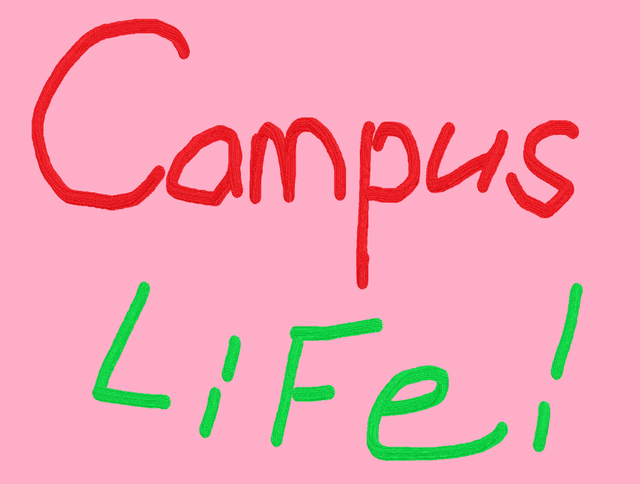

学科
サイバーセキュリティ科
ネットワークとセキュリティのプロを目指す。
ITスペシャリスト科
しっかり学べる３年生[情報工学コース]
思い出づくりは未来の宝！人生を豊かにする学園生活！
やるときにはしっかりやる、遊びも本気、そんなメリハリある毎日。学生主体のイベントやサークル活動も活発、充実学園生活。それがアイカレスタイル！
4～6月
■入学式 ■新入生歓迎球技大会 ■IT Fundamentals試験 ■Rasti試験 ■健康診断 ■学期末試験 ■Cloud Essential試験
7～9月
■CGクリエイター試験 ■コミュニケーション検定 ■ガイカレまつり ■Oracle Java Bonze試験 ■SEA/J試験 ■学期末試験 ■プレゼンテーション大会 ■夏期休暇 ■Game Jam ■三者面談
10～12月
■後期授業開始 ■就活キックオフ ■秋季球技大会 ■.com Master試験 ■CGクリエイター試験 ■卒業研究＆制作発表会 ■学期末試験 ■冬期休暇
1～3月
■IT津梁まつり ■学期末試験 ■Oracle ■ガイカレフェア ■卒業式 ■春季休暇